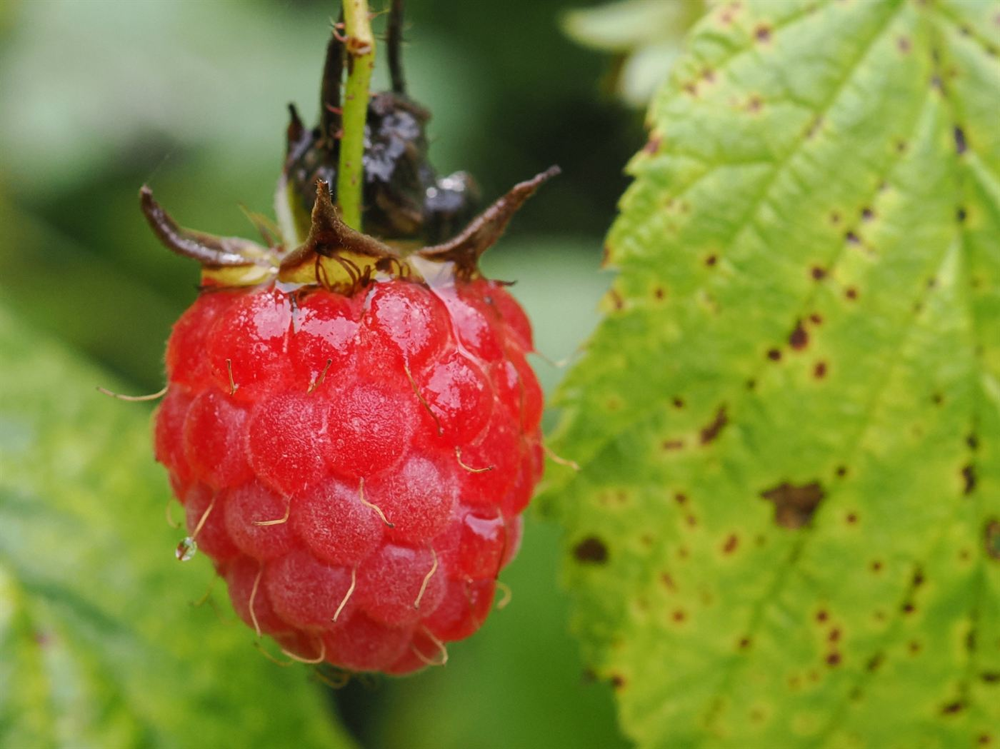

Kohvik · Tallinn · alates 2014
Hommik algab
kirsipuu all.
Väike kohvik vana maja esimesel korrusel. Värske kohv, soojad saiakesed ja laud, kuhu mahub ka see sõber, kes alati hiljaks jääb.
Avatud E–L 8–18 · P 9–15



Meist
Väike kohvik,
suur laud.
Kirsipuu algas ühest lauast, kahest toolist ja soovist teha koht, kus ei pea kiirustama.
Suurem osa meie menüüst sünnib väikeses köögis. Moosid teeme ise, leiva toob naabertänava pagar ja mee toob mesinik, kelle tarud asuvad linnast väljas. Kui midagi otsa saab, siis nii on — homme tuleb uus.
„Hea kohvik ei ole see, kus on kõige rohkem valikut. See on see, kus sa tead, mida tellida.“
Külasta
Tule istu.
Meil on ruumi.
Broneerimiseks helista või saada e-kiri. Väikese laua leiab tavaliselt ka ilma broneerimata.
Aadress
Kirsipuu 4
Tallinn
Kontakt
Jälgi meid
Enne tulekut
Küsimused,
mida kõige rohkem küsitakse.
Klõpsa küsimusel ja vastus avaneb. Teine klõps paneb selle jälle kinni.
Kas laud tuleb ette broneerida?
Väikese laua leiab tavaliselt ka ilma broneerimata. Kui tulete rohkem kui neljakesi, anna palun päev ette teada — siis saame lauad kokku panna.
Kas saab ka taimetoitu?
Jah. Menüüs on alati vähemalt üks taimne ja üks gluteenivaba valik — küsi leti äärest, töötaja oskab täpselt öelda, mis täna saadaval on.
Kas koeraga võib tulla?
Jah, terrassile võib koera kaasa võtta. Vett toome alati eraldi kausiga ja maiustus on leti taga olemas.
Kas on olemas wifi ja lastetool?
Mõlemad on olemas. Wifi parooli leiab kassast ja lastetooli saab küsida ilma eraldi broneerimata.